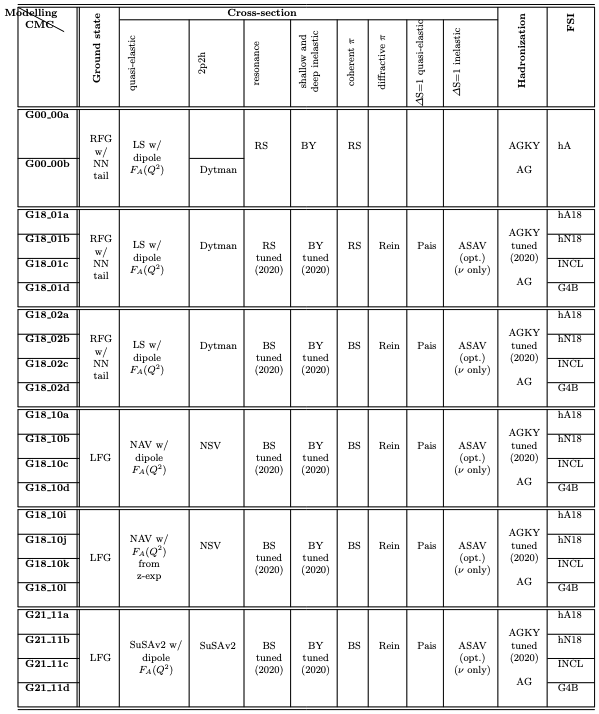

This page is meant as
one-stop shop for public GENIE tunes and comprehensive model configurations (CMC).
It includes a ligh level summary of the physics content of each CMC,
and information on all the tunes derived from that CMC.
it provides links to papers and other documents discussing
the physics characterization of our CMCs, and the global analyses used for deriving our tunes.
Before going any further on this page,
you might find it useful to familiarize yourself with the GENIE naming conventions
for its comprehensive model configurations and tunes.
Please
click here for details.
.
In the future we aim to provide a searchable database to access the thousands of validation plots that we produce,
and which will be linked from here.
We also aim to provide additional support for our physics tunes,
building in the oututs of our tuning procedure into the ReWeight package for uncertainty propagation.
Watch this space!
Medium energy (ME) GENIE configurations (100 MeV - 100 GeV)
The physics content of the publicly available CMCs in GENIE v3.2.0 is outlined in the following table
(along with a list of all abbreviations).
In general terms:
-
The G00_* CMCs are attempts to preserve the historic but severely outdated model in GENIE v2 series
(G00_00a is the "Default" model and G00_00b is the "Default+MEC" model of GENIE v2.12)
-
The G18_01* CMCs are adiabatic evolutions of the historic model, updating some of the cross-section
and FSI models and including missing processes (diffractive production of pions, hyperon production)
but keeping the same basic model construction.
-
The G18_02* CMCs are similar to G18_01* CMCs, but upgrade the resonance and coherent pion
production models (RS → BS)
-
The G18_10* CMCs keep G18_02* upgrades to the resonance and coherent pion production models,
and add a consistent theory-based model of interactions around the quasi-elastic peak (NAV QE and NSV 2p2h model).
There are variants of that model that use a simple dipole axial form factor, and other variants that employ the
better motivated but multi-parameter z expansion of the axial form factor.
-
The G21_11* CMCs, similarly to G18_10*, start from G18_02* and install an improved and consistent model
of interactions around the quasi-elastic peak. G21_11* uses the SuSAv2 QE and 2p2h model.
-
For each basic model construction, several CMC variants are produced by using different intranuclear hadron transport models:
`a' demotes use of INTRANUKE/hA, `b' of INTRANUKE/hN, `c' of Liege/INCL and `d' of Geant4 Bertini cascade.
Other CMCs including some of our newer modelling elements are being prototyped and tested.
Experiments have limited capacity in understanding/evaluating different CMCs and producing large samples,
so we apply a reasonably high threshold on the model combinations that are maintained and publicly released.
Please get in contact if you have ideas about additional CMCs of interest to the community that could be included in a future public release.

- opt.: Optional (needs to be enabled)
- RFG: Relativistic Fermi Gas model
- LFG: Local Fermi Gas model
- LS: Llewellyn-Smith quasi-elastic model
- RS: Rein and Sehgal models for resonance neutrino-production and coherent pion production
- BY: Bodek and Yang model
- ASAV: M. Rafi Alam, I. Ruiz Simo, M. Sajjad Athar and M.J. Vicente Vacas model of single-Kaon production
- NAV: J.Nieves, J. Enrique Amaro, and M. Valverde quasi-elastic interaction model
- NSV: J.Nieves, I. Ruiz Simo, and M.J. Vicente Vacas 2p2h model
- AGKY: C.Andreopoulos, H.Gallagher, P.Kehayias and T.Yang neutrino-induced hadronization model
- AG: C.Andreopoulos, and H.Gallagher charm hadronization model
- hA: Effective intranuclear transport model in INTRANUKE
- hN: Full intranuclear cascade (INC) model in INTRANUKE
- INCL: The Liege INC model
- G4B: Geant4 implementation of the Bertini INC model
A large number tunes can be (are) produced for each CMC listed above, from fits to different datasets.
Only a small fraction of these is made available, as we aim to consolidate efforts to a small number
of predictive models and tunes that simultaneously describe large collections of data.
Many of the partial tunes described in our papers and presentations,
which are usefull for understanding tensions between datasets and how to go about building joint fits,
are not always made available.
However we can provide these tunes on request.
The following tunes are available in GENIE v3.0.6 and v3.2.0.
Note that:
-
We use the following status labels for tunes: Outdated (O), Experimental (E), Production (P), Recommended Production (P*)
-
The tune labels shown in red below, are the labels that can be accepted as --tune arguments in GENIE applications
-
Tunes marked as `baseline' describe the original settings of each new CMC and
include parameter values from a mixture of past GENIE tunes, external tunes,
or reasonable first estimates for new modelling elements that is too complex to note in this summary table.
Typically, they carry the label 00_000.
They form the starting point for a branch of more refined and well-motivated GENIE tunes.
-
The label 02_11b denotes
the final version of the GENIE 2020
nucleon cross-section model re-tune using bubble chamber CCQE, CC1π, CC2π, and CC inclusive cross-section data, published in
J.Tena-Vidal et al., Phys.Rev.D 104 (2021) 7, 072009.
This tune was made available in v3.2.0.
Please note that the label 02_11a denotes a Preliminary version of that fit, and not the published version.
-
The GENIE 2021 hadronization tunes published in
J.Tena-Vidal, Phys.Rev.D 105 (2022) 1, 012009
are not yet distributed as part of a tuned bundled in public GENIE release.
-
The GENIE 2022 nuclear CC0π tunes published in
J.Tena-Vidal, TBA
are not yet distributed as part of a tuned bundled in public GENIE release.
| G00_00a_00_000 |
O |
v3.0.0 - v3.2.0 |
Preserved historic "Default" tune of GENIE v2.12 |
| G00_00b_00_000 |
O |
v3.0.0 - v3.2.0
| Preserved historic "Default+MEC" tune of GENIE v2.12 |
| G18_01a_00_000 |
O |
v3.0.0 - v3.2.0 |
Baseline G18_01a tune |
| G18_01b_00_000 |
O |
v3.0.0 - v3.2.0 |
Baseline G18_01b tune |
| G18_01c_00_000 |
O |
v3.2.0 |
Baseline G18_01c tune |
| G18_01d_00_000 |
O |
v3.2.0 |
Baseline G18_01d tune |
| G18_02a_00_000 |
O |
v3.0.0 - v3.2.0 |
Baseline G18_02a tune |
| G18_02b_00_000 |
O |
v3.0.0 - v3.2.0 |
Baseline G18_02b tune |
| G18_02c_00_000 |
O |
v3.2.0 |
Baseline G18_02c tune |
| G18_02d_00_000 |
O |
v3.2.0 |
Baseline G18_02d tune |
| G18_10a_00_000 |
O |
v3.0.0 - v3.2.0 |
Baseline G18_10a tune |
| G18_10b_00_000 |
O |
v3.0.0 - v3.2.0 |
Baseline G18_10b tune |
| G18_10c_00_000 |
O |
v3.2.0 |
Baseline G18_10c tune |
| G18_10d_00_000 |
O |
v3.2.0 |
Baseline G18_10d tune |
| G18_10i_00_000 |
O |
v3.0.0 - v3.2.0 |
Baseline G18_10i tune |
| G18_10j_00_000 |
O |
v3.0.0 - v3.2.0 |
Baseline G18_10j tune |
| G18_10k_00_000 |
O |
v3.2.0 |
Baseline G18_10k tune |
| G18_10l_00_000 |
O |
v3.2.0 |
Baseline G18_10l tune |
| G21_11a_00_000 |
O |
v3.2.0 |
Baseline G21_11a tune |
| G21_11b_00_000 |
O |
v3.2.0 |
Baseline G21_11b tune |
| G21_11c_00_000 |
O |
v3.2.0 |
Baseline G21_11c tune |
| G21_11d_00_000 |
O |
v3.2.0 |
Baseline G21_11d tune |
| G18_01a_02_11a |
O |
v3.0.0 - v3.2.0 |
Prelim G18_01a free nucleon x-section retune |
| G18_01b_02_11a |
O |
v3.0.0 - v3.2.0 |
Prelim G18_01b tune free nucleon x-section retune |
| G18_02a_02_11a |
O |
v3.0.0 - v3.2.0 |
Prelim G18_02a free nucleon x-section retune |
| G18_02b_02_11a |
O |
v3.0.0 - v3.2.0 |
Prelim G18_02b free nucleon x-section retune |
| G18_10a_02_11a |
O |
v3.0.0 - v3.2.0 |
Prelim G18_10a free nucleon x-section retune |
| G18_10b_02_11a |
O |
v3.0.0 - v3.2.0 |
Prelim G18_10b free nucleon x-section retune |
| G18_01a_02_11b |
P |
v3.2.0 |
Final G18_01a 2020 free nucleon x-section retune |
| G18_01b_02_11b |
P |
v3.2.0 |
Final G18_01b 2020 free nucleon x-section retune |
| G18_01c_02_11b |
P |
v3.2.0 |
Final G18_01c 2020 free nucleon x-section retune |
| G18_01d_02_11b |
P |
v3.2.0 |
Final G18_01d 2020 free nucleon x-section retune |
| G18_02a_02_11b |
P |
v3.2.0 |
Final G18_02a 2020 free nucleon x-section retune |
| G18_02b_02_11b |
P |
v3.2.0 |
Final G18_02b 2020 free nucleon x-section retune |
| G18_02c_02_11b |
P |
v3.2.0 |
Final G18_02c 2020 free nucleon x-section retune |
| G18_02d_02_11b |
P |
v3.2.0 |
Final G18_02d 2020 free nucleon x-section retune |
| G18_10a_02_11b |
P |
v3.2.0 |
Final G18_10a 2020 free nucleon x-section retune |
| G18_10b_02_11b |
P |
v3.2.0 |
Final G18_10b 2020 free nucleon x-section retune |
| G18_10c_02_11b |
P |
v3.2.0 |
Final G18_10c 2020 free nucleon x-section retune |
| G18_10d_02_11b |
P |
v3.2.0 |
Final G18_10d 2020 free nucleon x-section retune |
| G18_10i_02_11b |
P |
v3.2.0 |
Final G18_10i 2020 free nucleon x-section retune |
| G18_10j_02_11b |
P |
v3.2.0 |
Final G18_10j 2020 free nucleon x-section retune |
| G18_10k_02_11b |
P |
v3.2.0 |
Final G18_10k 2020 free nucleon x-section retune |
| G18_10l_02_11b |
P |
v3.2.0 |
Final G18_10l 2020 free nucleon x-section retune |
| G21_11a_02_11b |
P |
v3.2.0 |
Final G21_11a 2020 free nucleon x-section retune |
| G21_11b_02_11b |
P |
v3.2.0 |
Final G21_11b 2020 free nucleon x-section retune |
| G21_11c_02_11b |
P |
v3.2.0 |
Final G21_11c 2020 free nucleon x-section retune |
| G21_11d_02_11b |
P |
v3.2.0 |
Final G21_11d 2020 free nucleon x-section retune |
High energy (HE) GENIE configurations (> 100 GeV)
to be written
Low energy (LE) GENIE configurations (<100 MeV)
to be written